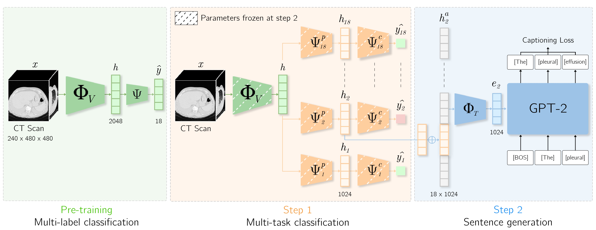
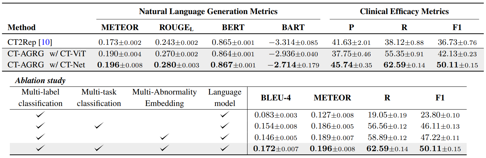
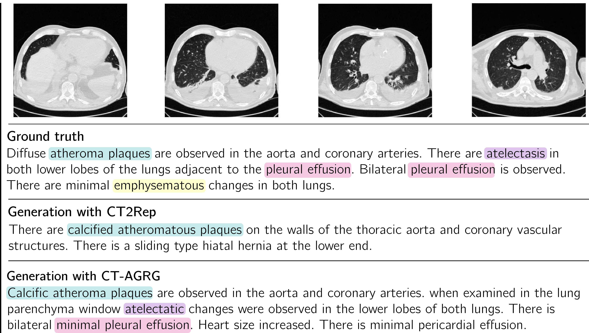

CT-Scroll
MIDL 2025
2.5D Representation learning
We employ a two-stage approach for anomaly detection and description generation. Initially, we use a visual feature extractor pre-trained on a multi-label classification task. In the first stage, we perform multi-task learning with one classification head per anomaly. If an anomaly is detected, its associated vector representation is then passed to the second stage. Here, a pre-trained GPT-2 model generates a descriptive text of the identified anomaly.

Models are trained and evaluated on CT-RATE, using train/validation/test splits across five independent runs.
CT-AGRG is compared against CT2Rep, the first-of-its-kind report generation framework for 3D CT scans. CT2Rep introduces an encoder-decoder architecture that generates the entire report without an intermediate abnormality classification tasks. For CT-AGRG, we report performances using an attention-based backbone (CT-ViT), as well as a 2.5D convolutional neural networks (CT-Net). We report natural language generation metrics (METEOR, ROUGE, BERT, BART, BLEU), and Clinical Efficacy metrics (F1-Score, Precision, Recall) extracted with the Rad-BERT labeler.

Key findings:
CT-AGRG outperforms CT2Rep on both report generation and clinical efficacy metrics. With CT-Net as the visual backbone, CT-AGRG improves Recall by 64% and F1-score by 50%, demonstrating that an intermediate abnormality classification stage significantly enhances pathology detection while producing semantically more accurate reports.
The qualitative example below compares CT-AGRG with the CT2Rep baseline and the ground-truth radiology report. Color-coded annotations highlight clinically relevant findings, showing that CT-AGRG more accurately identifies pathologies and generates reports using terminology that closely matches radiologist-written reports.

In this work of academic research, our experiments are run on a public Computed Tomography dataset. We acknowledge contributors from CT-RATE [1] for releasing the dataset to the research community.
[1] Generalist foundation models from a multimodal dataset for 3D CT. Hamamci et al. 2026.
@article{dipiazza_2026_unict,
author = {Di Piazza, Theo and Lazarus, Carole and Nempont, Olivier. and Boussel, Loic},
title = {CT-AGRG: Automated Abnormality-Guided Report Generation from 3D Chest CT Volumes},
booktitle = {IEEE 22nd International Symposium on Biomedical Imaging (ISBI)},
year = {2025},
}Explore additional recent work in medical image analysis related to this project. Click on the images to access the corresponding project pages.
CT-Scroll
MIDL 2025
2.5D Representation learning

CT-SSG
MELBA Journal 2026
Graph representation learning

UniCT
MICCAI 2026
Multi-task learning